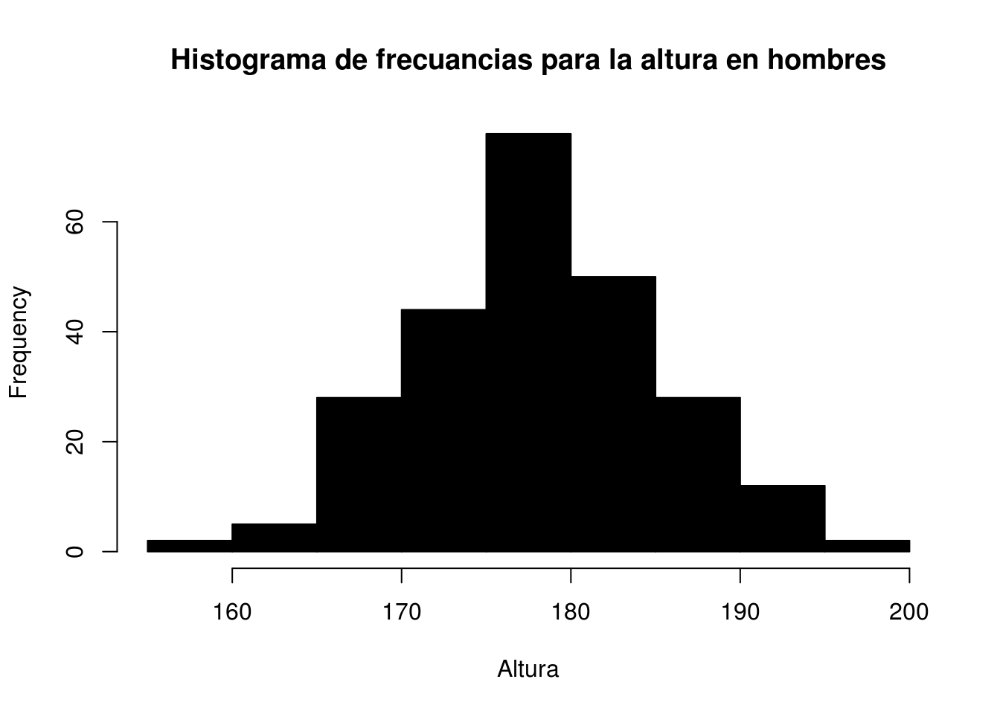
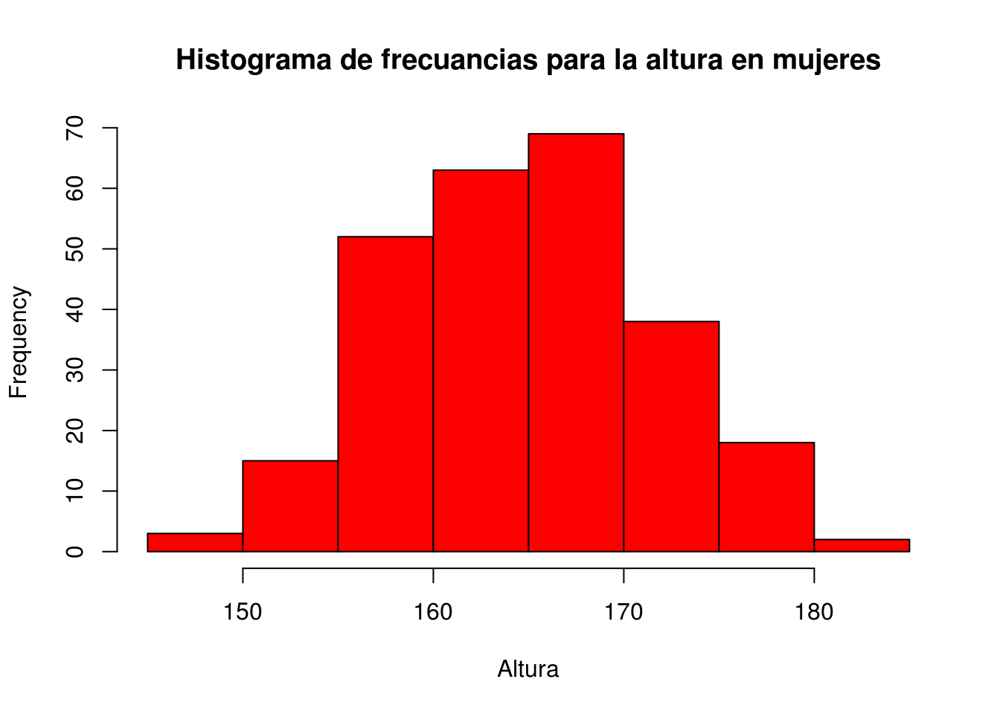
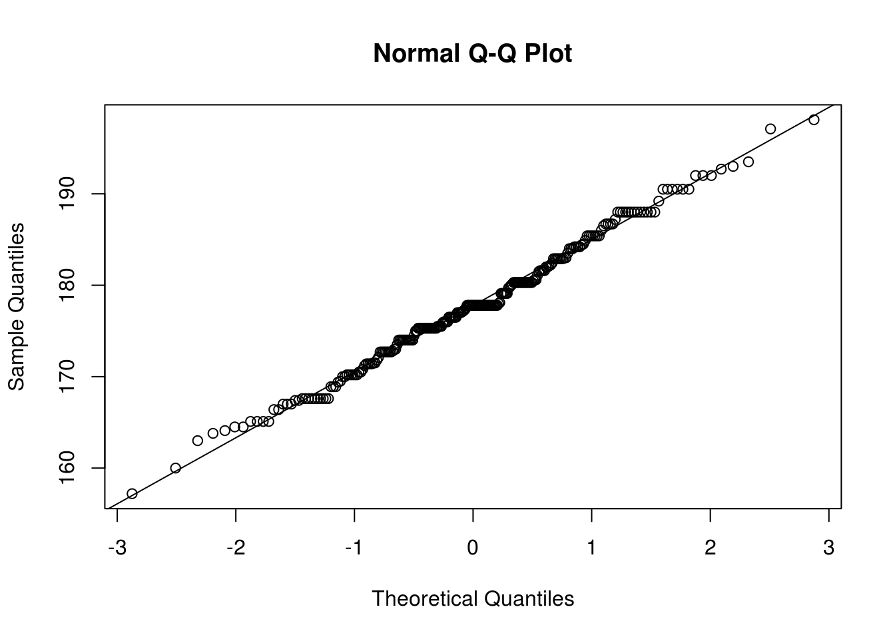
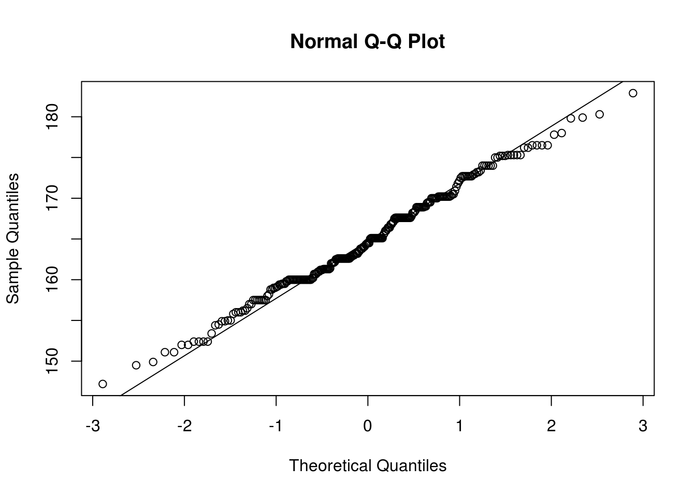

Muchos procedimientos o métodos en estadística toman un supuesto de entrada, el supuesto de la Normalidad, es decir que los datos que se están utilizando si son continuos provengan de una población Normal. Es decir, aplicamos un método estadístico y obtenemos unos resultados, que solo son ciertos si se cumple el supuesto de Normalidad. No siempre los datos provienen de una población que se distribuye normal, por tanto es necesario realizar algunas pruebas para verificarlo.
En estadística, un gráfico Q-Q (“Q” viene de cuantil) es un método gráfico para el diagnóstico de diferencias entre la distribución de probabilidad de una población de la que se ha extraído una muestra aleatoria y una distribución usada para la comparación, para nuestro caso es la distribución normal.
Vamos a usar los siguientes datos para usar el procedimiento
load(url("http://www.openintro.org/stat/data/bdims.RData"))
head(bdims)## bia.di bii.di bit.di che.de che.di elb.di wri.di kne.di ank.di sho.gi
## 1 42.9 26.0 31.5 17.7 28.0 13.1 10.4 18.8 14.1 106.2
## 2 43.7 28.5 33.5 16.9 30.8 14.0 11.8 20.6 15.1 110.5
## 3 40.1 28.2 33.3 20.9 31.7 13.9 10.9 19.7 14.1 115.1
## 4 44.3 29.9 34.0 18.4 28.2 13.9 11.2 20.9 15.0 104.5
## 5 42.5 29.9 34.0 21.5 29.4 15.2 11.6 20.7 14.9 107.5
## 6 43.3 27.0 31.5 19.6 31.3 14.0 11.5 18.8 13.9 119.8
## che.gi wai.gi nav.gi hip.gi thi.gi bic.gi for.gi kne.gi cal.gi ank.gi
## 1 89.5 71.5 74.5 93.5 51.5 32.5 26.0 34.5 36.5 23.5
## 2 97.0 79.0 86.5 94.8 51.5 34.4 28.0 36.5 37.5 24.5
## 3 97.5 83.2 82.9 95.0 57.3 33.4 28.8 37.0 37.3 21.9
## 4 97.0 77.8 78.8 94.0 53.0 31.0 26.2 37.0 34.8 23.0
## 5 97.5 80.0 82.5 98.5 55.4 32.0 28.4 37.7 38.6 24.4
## 6 99.9 82.5 80.1 95.3 57.5 33.0 28.0 36.6 36.1 23.5
## wri.gi age wgt hgt sex
## 1 16.5 21 65.6 174.0 1
## 2 17.0 23 71.8 175.3 1
## 3 16.9 28 80.7 193.5 1
## 4 16.6 23 72.6 186.5 1
## 5 18.0 22 78.8 187.2 1
## 6 16.9 21 74.8 181.5 1Ahora filtramos los datos por hombres y mujeres:
mdims <- subset(bdims, sex == 1)
fdims <- subset(bdims, sex == 0)La primera idea de normalidad, se puede obtener realizando un histograma de los datos, de dicho gráfico podemos concluir respecto a la simetría y a la no presencia de outliers que los datos podrían ser normales.
Usemos la variable de la altura en hombres y mujeres hgt.
hist(mdims$hgt, main = "Histograma de frecuancias para la altura en hombres", xlab = "Altura",col = "black")
Observamos que el histograma de frecuencias es aproximadamente simétrico para la altura de los hombres y que no hay presencia de outliers. Este gráfico nos da una buena idea que la posible normalidad de los datos.
hist(fdims$hgt,main = "Histograma de frecuancias para la altura en mujeres", xlab = "Altura",col = "red") Es evidente que en este histograma no hay simetría, por tanto lo más posible es que los datos no sean normales.
Un gráfico Q-Q nos da una idea más confiable de normalidad, para producir este grafico en RStudio se usa el siguiente código: Por ejmplo para la altura en hombres
qqnorm(mdims$hgt)
qqline(mdims$hgt)
En este gráfico se espera que la mayoría de puntos estén sobre una línea recta y que no haya presencia de outliers. En este caso tenemos un buen resultado, en donde podemos concluir que la altura de los hombres se distribuye normal.
Veamos para el caso de la altura en mujeres:
qqnorm(fdims$hgt)
qqline(fdims$hgt)
En este caso no es tan evidente la normalidad, dado que como se observa en la gráfica hay varios puntos que se alejan de la línea.
Existen pruebas más rigurosas, que se discutirán más adelante.